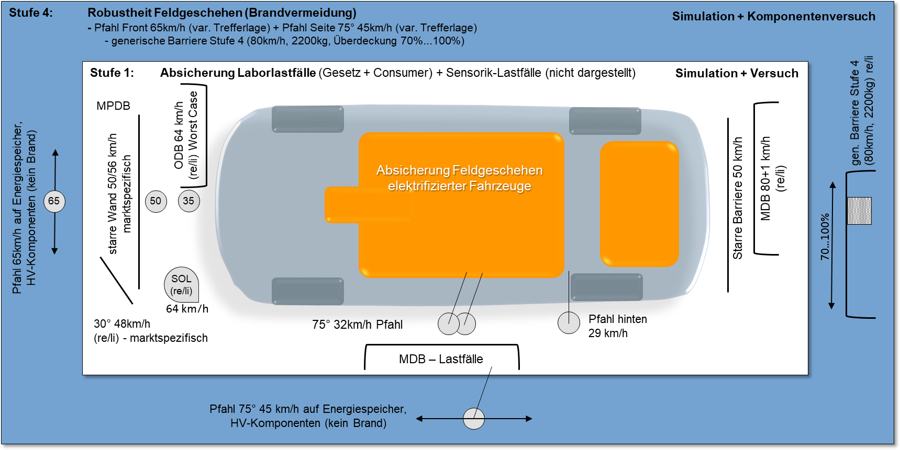
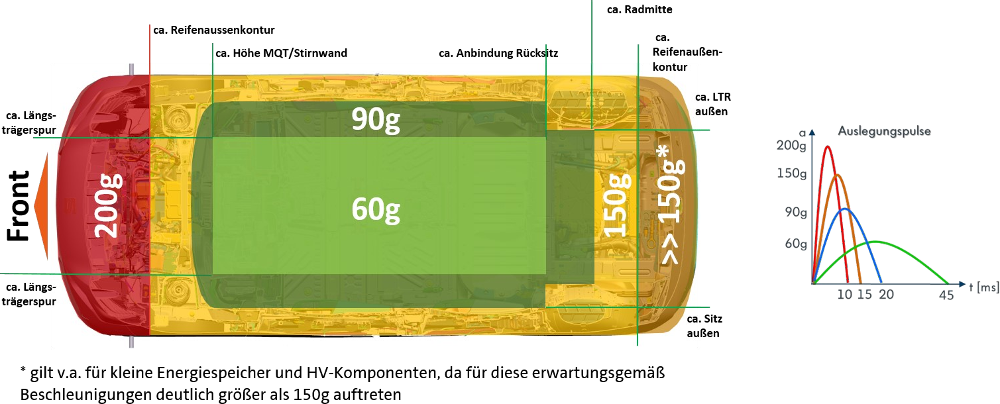
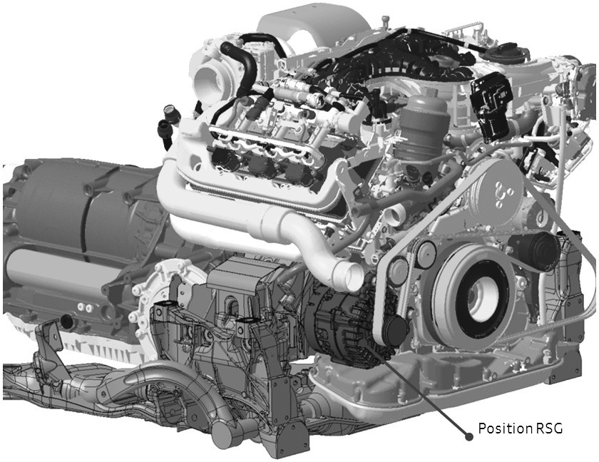
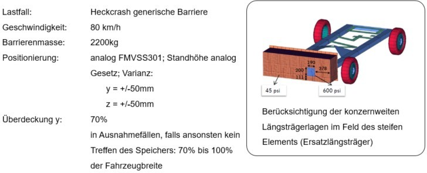
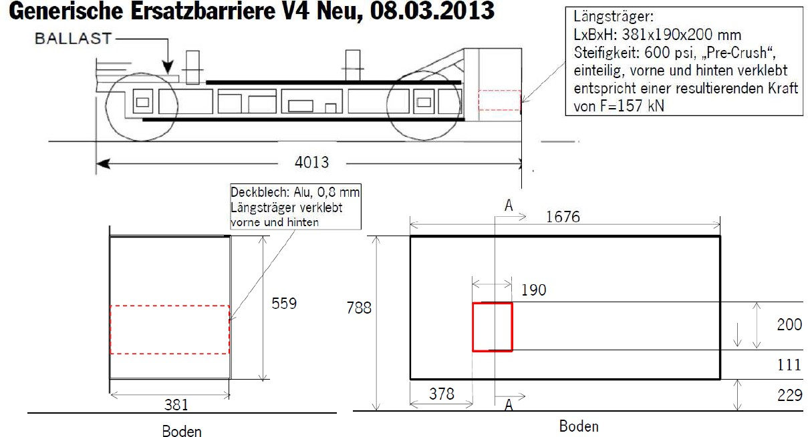
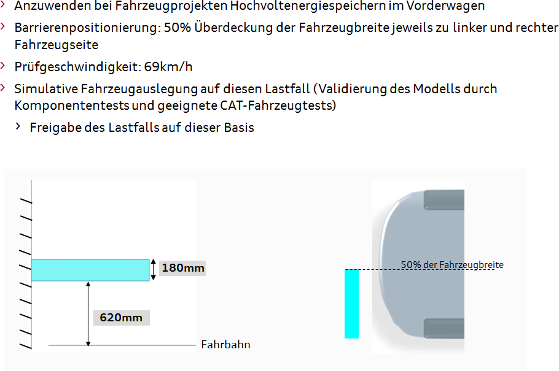

[redacted-person] LAH.DUM.880.AS
Version 3.1
PHEV, HEV, BEV, iHEV
Vertraulich. [redacted-person] vorbehalten. Weitergabe oder Vervielfältigung ohne vorherige schriftliche Zustimmung des Fachbereiches [redacted-co] verboten. Vertragspartner erhalten dieses Dokument nur über die zuständige Beschaffungsabteilung.
Only applies to English translation: [redacted-person] translation is believed to be accurate. In case of discrepancies the German version shall govern.
VOLKSWAGEN [redacted-co]
Seite 1
Genehmigung:
Inhaltsverzeichnis
[redacted-person] Fahrzeugsicherheit 11
Anforderungen an MV-Systeme 14
Anforderungen an HV-Systeme 20
Anforderungen an AWC (automotive wireless charging) 26
Anforderungen an E-Maschine 27
[I: E-BT-LAH-1]
Das vorliegende LAH legt die technischen Daten und Randbedingungen für elektrifizierte Fahrzeugkonzepte im Crash bezüglich den Anforderungen der Fahrzeugsicherheit (Crashverhalten) fest. Dies beinhaltet Fahrzeuge mit HV und MV Komponenten sowie Fahrzeuge mit Speichern aller Spannungslagen mit brennbarem Elektrolyt.
[I: E-BT-LAH-2]
Die vom Auftragnehmer zu erfüllenden Anforderungen sind in der Identifikationsnummer (z. B: [A: BT-LAH-1]) grundsätzlich durch ein "A" gekennzeichnet. Textteile, die durch ein "I" gekennzeichnet sind, sind Informationen zum besseren Verständnis des BT-LAH. Gibt es keine Identifikationsnummer oder keine Kennzeichnung mit "A" bzw. "I", so handelt es sich ebenfalls um eine Anforderung.
[A: E- BT-LAH-3]
Dieses LAH beschreibt Leistungen, Anforderungen, Prüf- und Erprobungsbedingungen, welche das zu entwickelnde Produkt und der Auftragnehmer erfüllen müssen.
[A: E-BT-LAH-4]
[redacted-person] für ein Gesamtsystem gelten automatisch für die Subkomponenten des Systems. (z. B.: Beschleunigungsanforderungen des Batteriesystems müssen von elektronischen Bauteilen, wie den Schützen, erfüllt werden.)
[A: E-BT-LAH-5]
Darüber hinaus gelten alle länderspezifischen Anforderungen der geltenden Gesetze, Normen und Prüfvorschriften.
[I: E-BT-LAH-6]
In diesem Lastenheft wird immer wieder Bezug auf MV-Komponenten oder MV- Systeme genommen. MV-Komponenten sind in diesem Lastenheft elektrische Verbraucher bzw. elektrische Quellen mit Versorgungs- bzw. Quellspannungen von 12VDC<U<60VDC. Ein MV-System ist die Gesamtheit aller MV-Komponenten.
[I: E-BT-LAH-7]
HV-Komponenten sind in diesem Lastenheft elektrische Verbraucher bzw. elektrische Quellen mit Versorgungs- bzw. Quellspannungen von U>60VDC oder U>30VAC. Ein HV-System ist die Gesamtheit aller HV-Komponenten.
[A: E-BT-LAH-8]
[redacted-person] der Entwicklung ist der Insassenschutz, die Sicherstellung der HV-Sicherheit und die Vermeidung exothermer Reaktionen des Gesamtfahrzeugs im Falle eines Crashs. [redacted-person] muss dazu beitragen, dass sämtliche internen Anforderungen nach TPB und alle gesetzlichen Vorschriften vom Gesamtfahrzeug sowie LAH Gesamtfahrzeug (siehe referenzierte Dokumente) erfüllt werden.
[redacted-person] beschreibt die für elektrifizierte Fahrzeuge anzuwendenden Lastfälle. [redacted-person] sind dagegen in Kapitel 4 beschrieben.
Es gelten grundsätzlich die Stufen 1 und 4 des zweistufigen Absicherungskonzeptes. [redacted-person] sind in nachfolgender Abbildung dargestellt.

Abbildung 1: [redacted-person] für elektrifizierte Fahrzeuge
Stufe 1 - Mustfire
Stufe 1 beinhaltet die für das jeweilige Fahrzeugprojekt geltenden Gesetzes- und Verbraucherschutzlastfälle, die internen Auslegungslastfälle sowie die [redacted-person].
In Stufe 1 ist dabei nach Lastfällen zu differenzieren, welche für alle elektrifizierten Fahrzeuge (Definition siehe Kapitel 1) anzuwenden sind und welche, die nur projektspezifisch in Abhängigkeit der angebotenen Märkte, Verbraucherschutzziele oder markenspezifisch gelten. Siehe hierzu Tabelle 1.
Hierfür sind die jeweiligen Gesamtfahrzeuglastenhefte der Fahrzeugsicherheit für Front-, Seiten- und Heckcrash, sowie Rollover, Fußgängerschutz und mitgeltende Unterlagen zu beachten. Diese beinhalten sowohl Gesetzeslastfälle als auch Lastfälle hinsichtlich der länderspezifischen Verbraucherschutzziele.
[redacted-person] ist dabei regelmäßig zu prüfen. Es gelten die Normen, Gesetze und Verbraucherschutzziele in der aktuell geltenden Fassung zum Einsatzzeitpunkt des Fahrzeugs. [redacted-person] sind zu berücksichtigen.
Stufe 1 – [redacted-person]
Für jeden im Fahrzeugprojekt gültigen Lastfall ist zudem die zugehörige [redacted-person] zu entwickeln (siehe Tabelle 1, [redacted-person]). [redacted-person] der [redacted-person] sind dabei teilweise durch Standardlastfälle der Sensorik vorgeben (z.[redacted-person] Pfahl 35km/h oder [redacted-person] 0° 27km/h). [redacted-person] des HV-Systems aufgrund exponierter Packagelagen auf eine abweichende [redacted-person] mit reduzierter Geschwindigkeit ist in Absprache mit der Sensorikentwicklung projektspezifisch möglich. [redacted-person] ohne zugehörigen [redacted-person] (z.[redacted-person] FMVSS305neu) ist die [redacted-person] projektspezifisch in Abhängigkeit vom HV-Package auszulegen (siehe Tabelle 1, Kennzeichnung ≤).
Stufe 4
Stufe 4 beinhaltet die internen Lastfälle zur Robustheitssteigerung im Feldgeschehen. Diese sind:
[redacted-person]
Stoßkörper: Pfahl, d=254mm Geschwindigkeit: 65km/h
Positionierung: mittig oder außermittig bei Asymmetrien im Package, exponierten HV-Komponenten oder Energiespeichern mit brennbarem Elektrolyt
[redacted-person]
Stoßkörper: Pfahl, d=254mm, 75° Geschwindigkeit: 45km/h
Positionierung: Worst-[redacted-person] für Energiespeicher und HV- Komponenten
[redacted-person] Barriere
Stoßkörper: generische Barriere, 2200 kg Geschwindigkeit: 80km/h
Positionierung: Nominallage analog Gesetz (FMVSS[redacted-phone]); Variation in z- und y-Richtung: +/-50 mm; in Ausnahmefällen in y- Richtung 70% - 100%Überdeckung ([redacted-person] Kapitel 5)
Die konkreten Lastfälle des Stufenmodells sind der nachfolgenden Tabelle zu entnehmen.
Tabelle 1: Lastfälle des Stufenmodells
|
|
||||||
|---|---|---|---|---|---|---|---|
|
|
||||||
| Front |
|
|
|
|
|||
|
|
|
|
||||
|
|
|
|
|
|||
|
|
|
|||||
|
|
|
|
|
|
|
|
|
|
|
|
|
|||
|
|
|
|
||||
|
|
|
|
||||
|
|
|
|
||||
|
|
|
|
|
|
||
|
|
|
|
|
|||
|
|
|
|
|
|||
|
|
|
|
|
|
||
|
|
|
|
||||
|
|
|
|
||||
|
|
32 km/h |
|
||||
|
|
29 km/h |
|
||||
|
[redacted-person] |
|
|
|
|||
|
|
|
|
||||
|
|
|
|
||||
|
|
|
|
||||
Legende:
* marktspezifisch
** verbraucherschutzspezifisch
*** markenspezifisch
Für [redacted-co]-Fahrzeugprojekte mit Traktionsbatterien im Vorderwagen, ist zusätzlich der Lastfall „LKW-Unterfahrer“ in Stufe 4 zu berücksichtigen (siehe Kapitel 5). Für [redacted-co]-Fahrzeugprojekte gilt zusätzlich der Pfahl frontal 50km/h.
Der ODB [redacted-person] Case ist ein Lastfall zur mechanischen Auslegung der Struktur und der Energiespeicher. [redacted-person] sind Kapitel 4 zu entnehmen.
Der statische Rollover-Test ist bei entsprechenden gesetzlichen Anforderungen (FMVSS und KMVSS) zu berücksichtigen.
[A: E-BT-LAH-22]
[redacted-person] an das HV- oder MV-System sind während der Entwicklung regelmäßig bei Änderungen des Systems mindestens zur B- Freigabe, BMG, PVS und 0-Serie zu überprüfen und bei Bedarf zu modifizieren.
[redacted-person] an das Kraftstoffsystem, Medien im Fahrzeug, Insassenschutz und Strukturintegrität sind den entsprechenden LAH der Fahrzeugsicherheit zu entnehmen.
[I: E-BT-LAH-23]
In Fahrzeugen mit konventionellen Antriebskonzepten, benötigt man verschiedene Reaktionen der Rückhaltesysteme, um einen optimalen Schutz der Insassen sicherzustellen. Beispiele hierfür sind die Auslösung der Gurtstraffer oder die Auslösung der Airbags in den jeweiligen Crash-Lastfällen (z.[redacted-person], Seite, Heck, Rollover).
[I: E-BT-LAH-24]
In elektrifizierten Fahrzeugen (mit MV-/HV-Systeme) muss zudem das HV-System bei den relevanten Crash-Lastfällen in einen sicheren Zustand überführt werden.
[A: E-BT-LAH-26]
Hierfür ist eine werkstattreversible Abschaltung umzusetzen.
[A: E-BT-LAH-29]
Bei der werkstattreversiblen Schwelle wird das HV- bzw. MV-System unverzüglich nach Erhalt der Crashbotschaft/Zündsignal, definiert im [redacted-person] LAH.DUM.959.E, abgeschaltet. [redacted-person] des HV- bzw. MV-Systems durch den Kunden ist in diesem Fall nicht mehr möglich.
[A: E-BT-LAH-32]
Das HV-System ist bei Auslösung der Airbags abzuschalten.
[I: E-BT-LAH-33]
[redacted-person] mit HV-System muss ein Rolloverlastfall erkannt werden. Dies muss zu einer werkstattreversiblen Abschaltung des HV-Systems führen.
[A: E-BT-LAH-35]
Um redundant zum Fahrzeug-Bussystem (z.[redacted-person], Flexray) Energiespeicher bzw. Energienetze abzuschalten sind zusätzliche Zündkreise vom Airbag- Steuergerät erforderlich. Die erforderliche Anzahl ist projektspezifisch festzulegen.
[I: E-BT-LAH-36]
Hinsichtlich der zu erwartenden Beschleunigungen im Fahrzeug werden bauraumabhängig Anforderungen an die HV- und MV-Komponenten sowie Speicher mit brennbarem Elektrolyt aller Spannungslagen gestellt.
[A: E-BT-LAH-37]
Die hier beschriebenen bauraumabhängigen Beschleunigungsanforderungen gelten darüber hinaus an alle Komponenten, welche für eine Abschaltung des HV- und MV-Systems notwendig sind (z.[redacted-person], Gateway, etc.).
[A: E-BT-LAH-38]
Es ist vom Komponentenverantwortlichen nachzuweisen, dass die in diesem Lastenheft beschriebenen Anforderungen an die einzelnen Komponenten, sowie an das MV- und HV-System, nach den hier beschriebenen Beschleunigungspulsen erfüllt werden. Die dafür erforderlichen Komponentenversuche sind mit der Fahrzeugsicherheit abzustimmen.
[A: E-BT-LAH-39]
Nachfolgende Abbildung 2 zeigt schematisch die definierten Bauraumbereiche und die zugehörigen Beschleunigungswerte:
Im Vorderwagen bzw. Frontcrash-Deformationsbereich werden 200g erwartet, (x-Richtung)
im Seitencrash-Deformationsbereich 150g (y-Richtung)
im Heckcrash-direkter Deformationsbereich >>150g (x-Richtung) (v.[redacted-person] kleine Energiespeicher)
im Heckcrash-indirekter Deformationsbereich 90g bis 150g (x-Richtung)
und im Fahrzeuginneren („deformationsfreie Zone“) eine Beschleunigung
von 60g. (x,y-Richtung)
In Abbildung 2 sind die zu testenden, abgeleiteten generischen Beschleunigungspulse (CFC60) abgebildet.

Abbildung 2: [redacted-person]: definierte Bauraumbereiche (links) und definierte generische Beschleunigungspulse (rechts)
[A: E- BT-LAH-40]
Die hier beschriebenen bauraumabhängigen Beschleunigungsanforderungen sind als Mindestanforderungen zu verstehen. [redacted-person] in den markierten Bereichen ([redacted-person] 1 links) gelten zusätzlich zu der Mindestanforderung 60g@45ms. [redacted-person] in den einzelnen Projekten unter Berücksichtigung des projektspezifischen Packages und etwaige zusätzliche im speziellen Projekt geltenden Lastfälle müssen weiterhin projektspezifisch ermittelt und bewertet werden. Eine simulative Bewertung zu einem möglichst frühen Projektstand muss durchgeführt werden.
Beschleunigungsanforderungen in ± z-Richtung sind projektspezifische zu berücksichtigen.
[A: E-BT-LAH-41]
[redacted-person] können, Kräfte auf die HV-/MV-Komponente im Crashfall abgeleitet werden. [redacted-person] sind bauraumabhängig und werden darüber hinaus von den benachbarten Komponenten und der zu erwartenden Crash-Kinematik beeinflusst. [redacted-person] sind vom bauteilverantwortlichen, projektspezifisch bei der Fahrzeugsicherheit bzw. der Fachabteilung zu erfragen.
[A: E-BT-LAH-42]
Die hier beschriebenen bauraumabhängigen Kraftanforderungen gelten darüber hinaus an alle Komponenten, welche für eine Abschaltung der HV- und MV- Komponenten notwendig sind (z.[redacted-person], Gateway, etc.).
[A: E-BT-LAH-43]
[redacted-person] an die HV-/MV-Komponenten sind durch Versuche vom Bauteilverantwortlichen nachzuweisen. [redacted-person] sind mit der Fahrzeugsicherheit abzustimmen.
[A: E-BT-LAH-44]
Die HV- bzw. MV-Komponenten sollten möglichst außerhalb von Deformationszonen verbaut werden.
[A: E-BT-LAH-45]
Treten an einer Position der HV- bzw. MV-Komponente höhere Beschleunigungen auf, welche die Beschleunigungsfestigkeit der Komponente übersteigen, so ist die Komponente neu für die auftretenden Beschleunigungswerte zu entwickeln. Ist dies nicht möglich, ist die Komponente an dieser Position abzulehnen.
[A: E-BT-LAH-46]
Treten an einer Position der HV- bzw. MV-Komponente höhere Kräfte auf, welche die mechanische Robustheit der Komponente übersteigen, so ist die Komponente neu für die auftretenden Kräfte zu entwickeln. Ist dies nicht möglich, ist die Komponente an dieser Position abzulehnen.
[I: E-BT-LAH-48]
Als MV-System wird ein Energienetz mit einer nominalen Spannung 12VDC < U < 60VDC. Das konventionelle 12V Bordnetz gilt, zumindest in diesem LAH, nicht als MV-System.
[I: E-BT-LAH-49]
Im MV-System besteht keine Berührschutz-Anforderung im Gleichspannungsteil,
da die „definierte Berührschutzsgrenze von U=60VDC nicht erreicht wird.
[A: E-BT-LAH-50]
[redacted-person] einer Wechselspannung U>30VAC ist in einem MV-Energienetz nur komponentenintern zulässig.
[A: E-BT-LAH-51]
Wird im MV-System eine Wechselspannung U>30VAC erzeugt, z.[redacted-person] einen Wechselrichter, so ist diese Spannung hinsichtlich des Berührschutzes nach Crash zu bewerten. Es muss sichergestellt werden, dass nach Crash das MV-System, sowie seine MV-Komponenten als elektrisch berührgeschützt eingestuft werden können.
Bei einer Wechselspannung U>30VAC außerhalb einer Komponente, gelten die Anforderungen HV gemäß Kapitel 4.3.1.
[A: E-BT-LAH-52]
MV-Systeme mit Gleichspannungen U>20VDC sind bei einem Crash abzuschalten. Die MV-Energiespeicher (z.B. 48V-Supercap-Modul, 48V Lithium- Ionen-Batterie) müssen vom MV-System getrennt werden. Eine weitere Speisung des MV-Systems durch den MV-Energiespeicher ist zu verhindern.
[A: E-BT-LAH-53]
Ist die Gesamtenergie der Zwischenkreise der DC-Komponenten in einem MV- System E>1kJ, so ist eine aktive Entladung der Zwischenkreise nach der
Abschaltung des MV-Energiespeichers notwendig. Diese aktive Entladung muss innerhalb t=4s die Zwischenkreisspannung auf U<20VDC reduzieren. [redacted-person] der Zwischenkreise ist für die maximale Betriebsspannung des MV-Systems zu bewerten.
[A: E-BT-LAH-54]
[redacted-person] des MV-Systems wird die MV-Versorgungsspannung aller MV- Komponenten abgeschaltet. MV-Komponenten welche nach einem Primär-Crash eine Funktion ausführen müssen (z.[redacted-person], E-Bremse), müssen hinsichtlich des Ausfalls der Versorgungsspannung MV bewertet werden. Ggf. sind geeignete Backuplösungen zu entwickeln.
Kurzschlüsse, die vor oder nach Trennung des MV-Speichers vom MV-System innerhalb des MV-Systems entstehen können, dürfen nicht zu einem Brand führen. Dabei ist die gesamte mögliche Kurzschluss- / Lichtbogenenergie zu berücksichtigen, diese muss unterhalb 1kJ liegen.
[A: E-BT-LAH-55]
Bei einem MV-Energiespeicher mit brennbarem Elektrolyt gelten folgende Anforderungen an den Energiespeicher im Crash: [redacted-person] 1 gilt:
Es ist keine Zelldeformation zulässig.
Es ist keine Leckage von Elektrolyt zulässig.
Es ist keine exotherme Reaktion zulässig.
[redacted-person] des MV-Energiespeichers vom MV-Energienetz ist sicherzustellen.
Eine dauerhafte Abschaltung ist zu gewährleisten.
Kurzschlüsse die vor Trennung der MV-Batterie vom MV-System innerhalb des MV-Systems entstehen können, dürfen die sichere Trennung der MV- Batterie vom MV-System nicht beeinflussen. [redacted-person] sind zu spezifizieren (ohm‘scher Widerstand und Induktivität) und mit dem BTV zu bewerten.
[redacted-person] von Flüssigkeiten in den Energiespeicher von außen, welche im Nachgang zum Crash zu einem Kurzschluss der Zellen / Module oder zu einer exothermen Reaktion führen kann.
Falls eine Flüssigkeitskühlung in dem Energiespeicher verbaut ist, ist keine Leckage dieser Kühlung im Energiespeicher zulässig.
[redacted-person] mit dem MV-Energiespeicher (Überwachung des Zustandes, Ladezustand, Temperatur, etc.) ist auch nach dem Crash zu ermöglichen.
[A: E-BT-LAH-57]
Nach einem Crash ist sicherzustellen, dass der MV-Energiespeicher fest an der Karosserie bzw. Fahrzeugstruktur verbleibt. [redacted-person] des MV-
Energiespeichers sind hinsichtlich der auftretenden Kräfte und Beschleunigungen zu entwickeln.
[A: E-BT-LAH-58]
Das MV-System muss ab einer definierten Crashschwere abgeschaltet werden.
[A: E-BT-LAH-59]
MV-Komponenten welche nach einem Primär-Crash eine Funktion ausführen (z.[redacted-person], E-Bremse), müssen hinsichtlich des Ausfalls seitens FuSi bewertet werden.
[A: E-BT-LAH-60]
[redacted-person]- und Temperaturmessung und die Kommunikation mit dem MV- Energiespeicher (Überwachung des Zustandes, Ladezustand, Temperatur, etc.) sind auch nach dem Crash sicherzustellen.
[A: E-BT-LAH-61]
Es ist eine redundante Abschaltung des MV-Energiespeichers durch ein Bussystem und eine Zündkreisnachbildung vorzusehen. Die nötige Hardware- Umsetzung für eine solche Zündkreisnachbildung ist im [redacted-person] LAH.DUM.959.E beschrieben.
[A: E-BT-LAH-62]
Es kann auf eine Abschaltung über Zündkreis verzichtet werden, wenn eine Beschädigung von MV-Komponenten im Crash ausgeschlossen ist oder eine rechtzeitige Abschaltung über das Bussystem erfolgen kann.
[A: E-BT-LAH-63]
[redacted-person] des Energiespeichers muss intern im Gehäuse des Energiespeichers erfolgen. [redacted-person] von nicht abschaltbaren MV- Leitungen aus dem Energiespeichergehäuse ist nicht zulässig.
[A: E-BT-LAH-64]
Ein MV-Energiespeicher mit Supercaps (auch bekannt als Doppelschicht- Kondensatoren) muss auch bei einem Ausfall des Fahrzeug-Bussystems (z.[redacted-person], Flexray) den Supercap vom Energienetz abtrennen. Dies kann beispielsweise durch eine redundante Zündkreissimulation (analog HV-Batterie) erfolgen. Es ist aber auch möglich, bei einem Ausfall der Crashbotschaft (z.[redacted-person] von 10 Airbagbotschaften) die Abschaltung des Supercap-Moduls einzuleiten.
[A: E-BT-LAH-65]
[redacted-person] im Energiespeicher mit einer Differenzspannung U>20VDC müssen räumlich separiert werden, um einen Kurzschluss durch Verformung oder Beschleunigung des Energiespeichers zu verhindern. Dies kann beispielsweise durch einen geeigneten bruchfesten Separator / Isolator erfolgen.
[A: E-BT-LAH-66]
Die MV-Energiespeicher müssen die in diesem Kapitel geforderten Anforderungen bei den geforderten Beschleunigungen in Kapitel 4.1.4 und den geforderten Kräften in Kapitel 4.1.5 erfüllen. Dies ist in Komponentenversuche (z.[redacted-person] Schlittentests) durch den Bauteilverantwortlichen zu verifizieren.
[A: E-BT-LAH-67]
[redacted-person] für die Komponentenversuche und deren Anzahl sind mit der Fahrzeugsicherheit abzustimmen.
[A: E-BT-LAH-68]
[redacted-person] für die Beschleunigungsfestigkeit von MV-Energiespeichern mittels Beschleunigungsversuchen ist auf Zell-, Modul- und ZSB-Ebene zu erbringen.
[A: E-BT-LAH-69]
[redacted-person]-Beschleunigungsversuche sind mit den verschiedenen Bauständen der Energiespeicher auf Zell-, Modul- und ZSB-Ebene durchzuführen.
[A: E-BT-LAH-70]
[redacted-person] der Trennvorrichtungen (z.[redacted-person]) ist in Komponentenversuchen unter Berücksichtigung der maximalen Betriebsströme vom Bauteilverantwortlichen nachzuweisen. Ein ungewolltes Schalten unter worst- case Bedingungen ist auszuschließen. Ein sicheres Öffnen unter worst-case Bedingungen ist zu gewährleisten.
[A: E-BT-LAH-71]
[redacted-person] der Trennvorrichtungen im Energiespeicher ist mit der Fahrzeugsicherheit abzustimmen.
[A: E-BT-LAH-72]
Falls mehrere Trennvorrichtungen mit mechanischen Betätigungselementen verbaut werden, darf deren Ausrichtung (Bewegungsrichtung der Betätigungselemente) nicht gleichgerichtet sein.
[A: E-BT-LAH-73]
[redacted-person] innerhalb des Energiespeichers sind in einem deformationsgeschützten Bereich zu integrieren.
[A: E-BT-LAH-74]
Die auftretenden Kräfte im Crash am Gehäuse des MV-Energiespeichers dürfen nicht zur Deformation auf Zellebene führen. Dies ist vom Bauteilverantwortlichen mittels geeigneter Komponentendruckversuche nachzuweisen. [redacted-person] zu diesen Versuchen sind mit der Fahrzeugsicherheit abzustimmen.
[A: E-BT-LAH-75]
Bei einem Energiespeicher mit brennbarem Elektrolyt gelten folgende Anforderungen an den Energiespeicher im Crash: [redacted-person] 1 gilt:
Es ist keine Zelldeformation zulässig.
Es ist keine Leckage von Elektrolyt zulässig.
Es ist keine exotherme Reaktion zulässig.
Kein interner Kurzschluss
[redacted-person] von Sicherheits- und Komfortfunktionen ist nach Crash sicherzustellen (gültig für Bordnetzbatterien)
[redacted-person] von Flüssigkeiten in den Energiespeicher von außen, welche im Nachgang zum Crash zu einem Kurzschluss der Zellen / Module oder zu einer exothermen Reaktion führen kann.
Falls eine Flüssigkeitskühlung in dem Energiespeicher verbaut ist, ist keine Leckage dieser Kühlung im Energiespeicher zulässig.
[redacted-person]- und Temperaturmessung und die Kommunikation mit dem HV-Energiespeicher (Überwachung des Zustandes, Ladezustand, Temperatur, etc.) sind auch nach dem Crash sicherzustellen.
[A: E-BT-LAH-76]
Nach einem Crash ist sicherzustellen, dass der Energiespeicher fest an der Karosserie bzw. Fahrzeugstruktur verbleibt. [redacted-person] des Energiespeichers sind hinsichtlich der auftretenden Kräfte und Beschleunigungen zu entwickeln.
[A: E-BT-LAH-79]
[redacted-person] müssen die in diesem Kapitel geforderten Anforderungen bei den geforderten Beschleunigungen in Kapitel 4.1.4 und den geforderten Kräften in Kapitel 4.1.5 erfüllen. Dies ist in Komponentenversuche (z.[redacted-person] Schlittentests) durch den Bauteilverantwortlichen zu verifizieren.
[A: E-BT-LAH-80]
[redacted-person] für die Komponentenversuche und deren Anzahl sind mit der Fahrzeugsicherheit abzustimmen.
[A: E-BT-LAH-81]
[redacted-person] für die Beschleunigungsfestigkeit von Energiespeichern mittels Beschleunigungsversuche ist auf Zell-, Modul- und ZSB-Ebene zu erbringen.
[A: E-BT-LAH-82]
[redacted-person]-Beschleunigungsversuche sind mit den verschiedenen Bauständen der Energiespeicher auf Zell-, Modul- und ZSB-Ebene durchzuführen.
[A: E-BT-LAH-86]
[redacted-person] innerhalb des Energiespeichers sind in einem deformationsgeschützten Bereich zu integrieren.
[A: E-BT-LAH-87]
Die auftretenden Kräfte im Crash am Gehäuse des Energiespeichers dürfen nicht zu bleibenden Deformation oder Beschädigung von Zellen, Steuereinheit und Zell-/ Modulverbinder führen. Abhängig von der Zellchemie sind geringfügige bleibende Deformationen bei Nachweis der in diesem LAH genannten Anforderungen zulässig. Dies ist vom Bauteilverantwortlichen mittels geeigneter Komponentendruckversuche nachzuweisen. [redacted-person] zu diesen Versuchen sind mit der Fahrzeugsicherheit abzustimmen.
[I: E-BT-LAH-88]
Abbildung 3 zeigt die mögliche Position eines Riemen-Starter-Generators in einem längs eingebautem Motor.

Abbildung 3: [redacted-person] eines Riemen-Starter-Generators im längs eingebauten Motor
[A: E-BT-LAH-89]
[redacted-person] des MV Systems im Crashfall muss eine Speisung von Energie in das MV Netz durch den Riemen-Starter-Generator verhindert werden. [redacted-person], welche dies verhindern sollen müssen mit der Fahrzeugsicherheit abgestimmt werden.
[A: E-BT-LAH-90]
Bei RSGs, welche eine interne Spannung im HV-Bereich (U>60VDC oder U>30VAC) aufweist, muss der Berührschutz nach Crash sichergestellt werden. [redacted-person] hierfür müssen mit der Fahrzeugsicherheit abgestimmt werden.
[A: E-BT-LAH-91]
Eine verbaute Leistungselektronik im MV-Energienetz darf bei einem Crash nicht das MV-Energienetz stützen. So ist z.[redacted-person] einem DC-DC Wandler zwischen dem 12V Netz und dem MV-Netz (z.[redacted-person] in Abbildung 4) ein Hochsetzbetrieb im Crashfall zu verhindern. Die geforderten Reaktionen des Wandlers auf die unterschiedlichen Crash-Botschaften sind im Querschnittslastenheft „ „ zu finden. [redacted-person] zur Einhaltung dieser Anforderung sind mit der Fahrzeugsicherheit abzustimmen.
Abbildung 4: Mögliche MV-Energienetzvariante mit DC-DC Wandler
[A: E-BT-LAH-92]
Bei der Entwicklung der Leistungselektronik sind im Crashfall auftretende Spannungsausfälle, Ausfall von Fahrzeug-Bussystemen (z.[redacted-person], Flexray) und Ausfall von Partnersteuergeräten zu berücksichtigen und mit der Fahrzeugsicherheit abzustimmen.
[A: E-BT-LAH-94]
Bei MV-Leitungen sind in deformationsarmen Bereichen zu verlegen. Die MV- Leitungsverlegung ist mit der Fahrzeugsicherheit in den einzelnen Fahrzeugprojekten frühzeitig abzustimmen.
[I: E-BT-LAH-95]
[redacted-person] der Funktion bei Crash ist vorzusehen. [redacted-person] von Energie in das System ist zu verhindern.
[A: E-BT-LAH-96]
Bei MV-Komponenten welche eine Spannung oberhalb der HV-Grenzen (U>60VDC oder U>30VAC) innerhalb der Komponente erzeugen können, ist ein, elektrischer Berührschutz nach Crash zu bewerten. [redacted-person] ist mit der Fahrzeugsicherheit abzustimmen.
[A: E-BT-LAH-97]
Bei MV-Komponenten, welche sicherheitsrelevante Funktionen auch nach dem Crash ausführen sollen, muss diese sicherheitsrelevante Funktion hinsichtlich der Abschaltung des MV-Energienetzes bewertet werden.
[A: E-BT-LAH-27]
[redacted-person] ist mit einer Funktion zur Erkennung offener HV-Leitung: EoHVL während des Fahrbetriebs zu versehen.
[I: E-BT-LAH-98]
Als HV-System wird ein System mit einer nominalen Spannung U>= 60VDC oder U>=30VAC. bezeichnet
[A: E-BT-LAH-99]
Das HV-System muss ab einer definierten Crashschwere abgeschaltet werden. Ein berührgeschützter Zustand (IPXXD Innenraum, IPXXB Außenraum) ist in allen beschriebenen Lastfällen sicherzustellen. Es darf keine Spannung U>= 60VDC oder U>=30VAC. bei der Prüfung nach IPXXD Innenraum, IPXXB Außenraum messbar sein.
[A: E-BT-LAH-100]
[redacted-person] der primären Trennvorrichtungen (z.[redacted-person] der HV- Batterie) des HV-Energiespeichers muss unter Beschleunigung im Falle eines Kurzschlusses sichergestellt werden. Ein ungewolltes Schalten durch Auftreten hoher Beschleunigungen im Crashfall ist zu verhindern. [redacted-person] sind gemeinsam mit der Fachabteilung der Fahrzeugsicherheit abzustimmen und von den Bauteilverantwortlichen durchzuführen (z.[redacted-person] von unter Last schaltenden Schützen).
[redacted-person] (Schütze, Pyrofuse, etc.) müssen rechtzeitig nach Senden des Zündsignales einen offenen Zustand annehmen. Die notwendige Trennzeit ist projektspezifisch in Abhängigkeit von Package und Sensierzeit über alle geltenden Lastfälle zu spezifizieren.
[redacted-person] von HV-Komponenten, die zu Kurzschlüssen, Lichtbögen oder anderen kritischen Zuständen in der Komponente selbst oder anderen Verbrauchern des Energienetzes führen können, ist vor sicherer Abtrennung des jeweiligen Energiespeichers vom HV-Bordnetz nicht zulässig.
Kurzschlüsse, die nach Trennung der HV-Batterie vom HV-System innerhalb des HV-Systems entstehen können, dürfen nicht zu einem Brand führen. Dabei ist die gesamte Restenergie (inkl. möglicher Rekuperation) im HV-System zu berücksichtigen. Diese muss unterhalb 1kJ liegen.
[A: E-BT-LAH-101]
[redacted-person] der Zwischenkreise muss maximal 4s nach Crasherkennung des Airbagsteuergerätes eine Spannung von U<=60VDC und U<=30VAC erreichen.
Im Lastfall ODB 64km/h [redacted-person] Case ist dagegen der Schutz vor Stromschlag nach Crash zu gewährleisten.
[A: E-BT-LAH-102]
Ist die Gesamtenergie der Zwischenkreise der DC-Komponenten in einem HV- System E>1kJ (bei U<= 60VDC), so ist eine aktive Entladung der Zwischenkreise erforderlich, welche Zwischenkreise innerhalb t<5s auf eine Zwischenkreisspannung U<20VDC entlädt.
[A: E-BT-LAH-103]
HV-Komponenten welche nach einem Primär-Crash eine Funktion ausführen (z.[redacted-person], E-Bremse), müssen hinsichtlich des Ausfalls seitens FuSi bewertet werden.
[A: E-BT-LAH-104]
Es muss vom Komponentenverantwortlichen nachgewiesen werden, dass die einzelnen HV-Komponenten eine passive Entladung für deren elektrische Zwischenkreise besitzen.
[A: E-BT-LAH-105]
[redacted-person] des gesamten HV-Systems ist auch nach Crash sicherzustellen. Es darf keine Spannung U>= 60VDC oder U>=30VAC. bei der Prüfung nach IPXXD Innenraum, IPXXB Außenraum messbar sein.
Stufe 4:
In Stufe 4 gelten für das HV-System dagegen folgenden Anforderungen:
Kurzschlüsse, die vor oder nach Trennung der HV-Batterie vom HV-System innerhalb des HV-Systems entstehen können, dürfen nicht zu einem Brand führen. Dabei ist die gesamte mögliche Kurzschluss- / Lichtbogenenergie zu berücksichtigen.
[redacted-person] des Energiespeichers vom HV-Bordnetz ist sicherzustellen. Eine sichere, dauerhafte, mindestens einpolige Abschaltung ist zu gewährleisten. Kurzschlüsse, die vor Trennung der HV-Batterie vom HV-System innerhalb des HV-Systems entstehen können, dürfen die sichere Trennung der HV-Batterie vom HV-System nicht beeinflussen.
[A: E-BT-LAH-106]
Für einen HV-Energiespeicher gelten in Stufe 1 folgende Anforderungen (Crash- und Komponentenversuch):
Es ist keine Deformation oder Beschädigung von Zellen bzw. Zellmodulen (konzeptabhängig), CMC und Modulverbinder zulässig.
Es ist kein Elektrolytaustritt zulässig.
Es ist keine exotherme Reaktion zulässig.
Die rechtzeitige, allpolige Abtrennung des HV-Energiespeichers vom HV- Energienetz ist sicherzustellen.
[redacted-person] von Flüssigkeiten in den Energiespeicher, welche im Nachgang zum Crash zu einem Kurzschluss der Zellen / Module oder zu einer exothermen Reaktion führen kann.
Falls eine Flüssigkeitskühlung in dem Energiespeicher verbaut ist, ist keine Leckage dieser Kühlung im Energiespeicher zulässig.
[redacted-person]- und Temperaturmessung und die Kommunikation mit dem HV-Energiespeicher (Überwachung des Zustandes, Ladezustand, Temperatur, etc.) sind auch nach dem Crash sicherzustellen.
[redacted-person] von Komponenten im Inneren der Batterie ist nicht zulässig
IPXXD im Innenraum, IPXXB im Außenraum (Hinweis: ausreichende Integrität) inkl. Potentialausgleich
Kein interner Kurzschluss
[redacted-person] Hauptlastpfad
[A: E-BT-LAH-107]
Es ist eine redundante Abschaltung des HV-Energiespeichers durch ein Bussystem und eine Zündkreisnachbildung vorzusehen. Die nötige Hardware- Umsetzung für eine solche Zündkreisnachbildung ist im [redacted-person] LAH.DUM.959.E beschrieben.
[A: E-BT-LAH-108]
[redacted-person] des Energiespeichers muss intern im Gehäuse des Energiespeichers erfolgen. [redacted-person] von nicht abschaltbaren HV- Leitungen aus dem Energiespeichergehäuse ist zu vermeiden.
[A: E-BT-LAH-109]
[redacted-person] im Energiespeicher sind so auszulegen, dass durch Verformung und/oder Beschleunigung kein Kurzschluss auftreten kann.
[A: E-BT-LAH-110]
Es sind Komponentenversuche des HV-Energiespeichers vorzusehen. [redacted-person] und Randbedingung sind mit der Fahrzeugsicherheit abzustimmen.
[A: E-BT-LAH-111]
[redacted-person] für die Beschleunigungsfestigkeit von HV-Energiespeichern mittels Beschleunigungsversuche ist für jede Hardwarestufe auf Zell-, Modul- und ZSB- Ebene zu erbringen.
[A: E-BT-LAH-112]
[redacted-person] der Trennvorrichtungen (z.[redacted-person]) ist in Komponentenversuchen unter Berücksichtigung der maximalen Betriebsströme vom Bauteilverantwortlichen nachzuweisen. Ein ungewolltes Schalten unter worst- case Bedingungen ist auszuschließen. Ein sicheres Öffnen unter worst-case Bedingungen ist zu gewährleisten.
[A: E-BT-LAH-113]
[redacted-person] der Trennvorrichtungen im Energiespeicher ist mit der Fahrzeugsicherheit abzustimmen.
[A: E-BT-LAH-114]
Falls mehrere Trennvorrichtungen mit mechanischen Betätigungselementen verbaut werden, sind diese stehend unter der Voraussetzung, dass die Schließkräfte in z beschleunigungsfest bis 10g bleiben oder liegend in ihrer mechanischen Wirkrichtung um min. 90° gedreht zu verbauen, dadurch soll der Beschleunigungseinfluss sich nicht auf beide Schütze auswirken.
[A: E-BT-LAH-115]
[redacted-person] innerhalb des Energiespeichers sind in einem deformationsgeschützten Bereich zu integrieren.
[redacted-person] HV+ und HV- der Batterie sind in einer verformungsarmen Zone zu positionieren. [redacted-person] dieser ist unzulässig. Gegebenenfalls sind zusätzliche Schutzmaßnahmen vorzuhalten.
Vermeidung von brandbeschleunigenden Medien und Materialien im Bereich der HV-Batterie.
[redacted-person] der Batterie ist in Stufen 1 zu gewährleisten.
Nach einem Crashversuch muss die HV-Batterie im statischen Rollovertest („Grilltest“ nach [redacted-phone]) sicher am Fahrzeug verbleiben und darf nicht aus ihrer Halterung kippen und / oder rutschen. [redacted-person] der Batterie ist grundsätzlich über eine Beurteilung der verbleibenden integren Anbindungspunkte zu bewerten. Sollte die Integrität der Anbindungspunkte hierzu nicht gewährleistet werden können, sind geeignete alternative Lösungen (z.[redacted-person] o.ä.) vorzusehen. [redacted-person] des HV-Energiespeichers sind hinsichtlich der auftretenden Kräfte und Beschleunigungen zu entwickeln. Es gelten weiterhin die Anforderungen der Gesetzestexte FMVSS305, TRIAS 67 und ECE R94/95.
Beschädigungen von unten bei Batterien nahe Bodengrenzfläche (z.[redacted-person] Randsteinüberfahrer) werden nicht seitens der Fahrzeugsicherheit bewertet. [redacted-person] sind seitens der jeweiligen zuständigen Fachabteilung zu bewerten.
Abweichend zu den Anforderungen der Stufe 1 gilt für Stufe 4 (Crash- und Komponentenversuch):
Eine direkte Kraftübertragung und definierte Deformationen auf Batteriemodul-/ Zellebene (konzeptabhängig) ist zulässig. [redacted-person] soll ausgeschlossen werden. Alternativ kann nachgewiesen werden, dass eine geringfügige Leckage in flüssiger Form oder in Form von nicht sichtbaren kalten Dämpfen (kein heißes Elektrolytgas/-rauch) zu keiner exothermen Reaktion führt
Die auftretenden Beschleunigungsbelastungen (siehe Kapitel 4.1.4) sind in der Auslegung zu berücksichtigen
Es ist keine exotherme Reaktion (Brand und/ oder Explosion) zulässig.
Die robuste, mindestens einpolige, Abtrennung des HV-Energiespeichers vom HV-Energienetz durch geeignete Trennvorrichtungen (z.[redacted-person]), auch bei Beschädigung von HV-Komponenten und entsprechenden Kurzschlussströmen, ist sicherzustellen.
Erprobung auf Zellmodulebene (konzeptabhängig):
Bei der Integration von Traktionsbatterien in ein Fahrzeug ist durch die verantwortlichen Fachbereiche eine Mindestanforderung auf Zellmodulebene nachzuweisen.
Die dazu durchzuführenden Versuche und jeweiligen Bewertungskriterien sind im Erprobungslastenheft LAH.[redacted-phone]Specification for vehicle safety crush tests definiert.
[redacted-person] und die Versuchsergebnisse sind mit der Fahrzeugsicherheit abzustimmen.
[redacted-person] ist dem LAH.[redacted-phone]zu entnehmen.
[A: E-BT-LAH-125]
Bei einer Abschaltung des HV-Systems aufgrund eines Crashs, muss der Wechselrichter bei Erhalt der zugehörigen Crash-Botschaft einen aktiven Kurzschluss schalten.
[A: E-BT-LAH-126]
Ist in der Leistungselektronik eine Schaltung für die aktive Entladung der Zwischenkreiskapazitäten der HV-Komponenten integriert, muss die aktive Entladung nach Absenden der [redacted-person] an die LE hinsichtlich einer Abschaltung des HV-Systems aktiviert werden. Die aktive Entladung muss dazu beitragen, die Anforderungen an das HV-System, definiert unter 4.3.1, zu erfüllen.
[A: E-BT-LAH-127]
Ein verbauter HV-DC-DC Wandler darf die Entladung der HV- Zwischenkreiskapazitäten nicht verzögern. [redacted-person] der HV- Zwischenkreiskapazitäten nach Erhalt der Crashbotschaft hinsichtlich einer Abschaltung des HV-Systems ist nicht zulässig.
[A: E-BT-LAH-128]
Die HV-Leistungselektronik muss die in diesem Kapitel geforderten Anforderungen bei den geforderten Beschleunigungen in Kapitel 0 und den geforderten Kräften in Kapitel 4.1.5 erfüllen. Dies ist in Komponentenversuche (z.[redacted-person] Schlittentests) durch den Bauteilverantwortlichen zu verifizieren.
[A: E-BT-LAH-129]
[redacted-person] der Komponente ohne Abschaltung des HV-Systems bzw. der Komponente ist nicht zulässig.
[A: E-BT-LAH-130]
Ist das Ladegerät spannungsführend im Fahrbetrieb, ist eine Beschädigung der Komponente ohne Abschaltung des HV-Systems nicht zulässig.
[A: E-BT-LAH-131]
Ladedosen, sowie die zugehörigen HV-Leitungen zwischen Ladedose und Ladegerät bzw. Batterie, dürfen im Fahrbetrieb und nach Crash nicht unter Spannung stehen.
[A: E-BT-LAH-132]
Die mechanische Auslegung von Ladedosen müssen mit der Fahrzeugsicherheit hinsichtlich Fußgängerschutz-Anforderungen abgestimmt werden.
[I: E-BT-LAH-133]
[redacted-person] hinsichtlich HV-Abschaltung berücksichtigen nicht die Ladedose und deren HV-Leitungen. D.[redacted-person] einer Beschädigung der Ladedose wird das HV-System im Fahrbetrieb nicht zwingend abgeschaltet.
[A: E-BT-LAH-134]
[redacted-person] nach Beschädigung der Ladedose oder der Ladekabel ist seitens der HV-Sicherheit und der Gebrauchssicherheit zu berücksichtigen.
Anforderungen an AWC (automotive wireless charging)[I: E-BT-LAH-136]
[redacted-person] an das AWC sind auf der Grundlage eines integrierten Systems von AWC-Feldspule, Gleichrichter und Bereich der HV-Stecker entstanden. [redacted-person] ist in Abbildung 5 das angenommene System schematisch dargestellt.
[A: E-BT-LAH-137]
Ändert sich das System, so z.[redacted-person] ein System mit räumlich getrenntem Gleichrichter und Feldplatte ins Fahrzeug integriert werden soll, ändern sich ggf. die Anforderungen an das System. Dies ist mit der Fahrzeugsicherheit im Projekt abzustimmen.
Abbildung 5: [redacted-person] eines AWC-Systems
[A: E-BT-LAH-138]
Die AWC-Feldspule (vor Gleichrichter) muss im Fahrbetrieb abgeschaltet werden bzw. stromlos sein.
[A: E-BT-LAH-139]
[redacted-person] des AWCs, welcher auch im Fahrbetrieb unter Spannung steht (HV- Kabel, HV-Stecker, Gleichrichter) muss im geschützten Bereich untergebracht sein, d.h. z.[redacted-person] der AWC-Feldspule.
[redacted-person] AWC ist eine HV-Abschaltung erforderlich. [redacted-person] des AWCs am Fahrzeug ist sicherzustellen.
[A: E-BT-LAH-140]
[A: E-BT-LAH-141]
[A: E-BT-LAH-142]
Ist im Fahrzeug ein Range-Extender verbaut, muss dieser bei HV-Abschaltung abgeschaltet und die Kraftstoffzufuhr unterbrochen werden.
[A: E-BT-LAH-143]
Nach einer HV-Abschaltung darf das Ladegerät nur noch durch den Kundendienst
/ Werkstatt wieder in Betrieb genommen werden. [redacted-person] kann sein Fahrzeug nicht mehr durch das verbaute Ladegerät laden.
[A: E-BT-LAH-144]
Nach einer HV-Abschaltung darf das AWC (automotive wireless charging) nicht mehr vom Kunden in Betrieb genommen werden können. Das AWC kann nur durch den Kundendienst / Werkstatt wieder in Betrieb genommen werden.
Anforderungen an E-Maschine[A: E-BT-LAH-145]
Die E-Maschine darf im Falle eines Crashs keine Energie ins HV-Netz zurückspeisen. Die dafür notwendigen Bedingungen (z.[redacted-person] Getriebe, Erregerkreisspannung, Zustand der Verbrennungskraftmaschine, Leistungselektronik) sind mit der Fahrzeugsicherheit und den zuständigen Partnerabteilungen abzustimmen.
[A: E-BT-LAH-146]
[redacted-person] an das Getriebe richten sich in erster Linie danach, dass die E- Maschine keine Energie mehr in das HV-Netz zurückspeisen kann. Um dies zu gewährleisten sind die erforderlichen Maßnahmen / Anforderungen mit der Fahrzeugsicherheit abzustimmen.
[I: E-BT-LAH-147]
An die Verbindungsleitung zwischen Ladedose und Ladegerät (spannungsfrei im Fahrbetrieb) besteht seitens Fahrzeugsicherheit keine Anforderung. [redacted-person] und Gefährdungen durch das Laden mit beschädigten Ladedosen und –kabeln muss seitens der HV-Sicherheit und Gebrauchssicherheit bewertet werden.
[I: E-BT-LAH-148]
Es sind Überlängen bei HV-Leitungen zu berücksichtigen, um etwaige Relativbewegungen der HV-Komponenten ohne einen Leitungsabriss zu ermöglichen.
[redacted-person] besteht die Anforderung:
Es darf keine Spannung U>= 60VDC oder U>=30VAC. bei der Prüfung nach IPXXD Innenraum, IPXXB Außenraum messbar sein. Im Crash abgerissene Leitungen oder Kurzschlüsse sind denkbar wenn:
[redacted-person] für diesen Crashfall robust (ohne Gefährdung der Trenneinrichtung durch den Kurzschluss/Abriss) erfolgt.
[redacted-person] zeitlich schon vor dem Auftreten des Kurzschlusses sicher geöffnet ist und somit keine Kurzschlussströme über das Trennelement mehr fließen.
die Energie, welche in einem evtl. auftretenden Lichtbogen im Umfeld von Feststoffen entstehen könnte, ist E<1kJ. Flüssige / gasförmige Medien sind gesondert zu betrachten.
[redacted-person] der Energien ist vom Komponentenverantwortlichen zu erbringen und mit der Fahrzeugsicherheit abzustimmen
[A: E-BT-LAH-149]
[redacted-person] von HV-AC-Leitungen ist zu vermeiden. [redacted-person] von HV-AC-Leitungen zwischen Wechselrichter und E-Maschine ist jedoch unter folgenden Prämissen denkbar:
Nur eine HV-AC Leitung einer dreiphasigen E-Maschine reißt ab, dadurch sind das Schalten des aktiven Kurzschlusses und das Abbremsen der E- Maschine noch möglich.
[redacted-person], welche in einem evtl. auftretenden Lichtbogen entstehen könnte, ist E<1kJ. [redacted-person] der Energien ist vom Komponentenverantwortlichen zu erbringen und mit der Fahrzeugsicherheit abzustimmen.



[A: E-BT-LAH-766]
Es gelten die am Ausgabedatum des BT-LAH gültigen mitgeltenden Unterlagen, sowie die darin genannten Dokumente.
Insbesondere das Erprobungslastenheft für Drücktests mit Batteriezellmodulen LAH.[redacted-phone]
[A: E-BT-LAH-767]
[redacted-person] stellt sicher, jeweils mit den für dieses BT-LAH gültigen mitgeltenden Unterlagen zu arbeiten.
Bezugsquelle:
[I: E-BT-LAH-769]
Dokumente können über die B2B-Lieferantenplattform des [redacted-person] unter der Internetadresse: www.vwgroupsupply.com mit einer Zugangsberechtigung abgerufen werden. (Kontakt auch über [redacted]99 bzw. International:
[redacted-phone] oder e-Mail: [redacted-email] )
[A: E-BT-LAH-770]
Lastenhefte der HV-Komponenten: Batterie, Leistungselektronik, Ladegerät, Klimakompressor sind von den Bauteilverantwortlichen der zuständigen Fachabteilungen zur Verfügung zu stellen.
[A: E-BT-LAH-777]
Für [redacted-co] Sicherheitsauslegung E-Fahrzeuge“ der Abteilung EKSG
QLAH Crashreaktionen LAH.DUM.959.E
TL 1011
[redacted-co]99000:
[A: E-BT-LAH-781]
[redacted-person] zur Leistungserbringung im Rahmen der Bauteilentwicklung
[redacted-co]99000-1:
[A: E-BT-LAH-782]
Teil 1: [redacted-person] zur Leistungserbringung im Rahmen der Bauteilentwicklung; Planungsfreigabe
[redacted-co]99000-2:
[A: E-BT-LAH-783]
Teil 2: [redacted-person] zur Leistungserbringung im Rahmen der Bauteilentwicklung; Beschaffungsfreigabe
[redacted-co]99000-3:
[A: E-BT-LAH-784]
Teil 3: [redacted-person] zur Leistungserbringung im Rahmen der Bauteilentwicklung; Konstruktions- ([redacted-co]) bzw. Entwicklungsfreigabe (VW)
[redacted-co]99000-4:
[A: E-BT-LAH-785]
Teil 4: [redacted-person] zur Leistungserbringung im Rahmen der [redacted-person]
DIN EN ISO 9001
[A: E-BT-LAH-771]
[I: E-BT-LAH-772]
Batteriemodule einschließlich Gehäuse, Batterieelektronik inkl. Peripherie für Ausführung der sicherheitsrelevanten Funktionen, Anschlüsse und Befestigung.
HV-Batterie ist das wieder aufladbare Energiespeichersystem, das elektrische Energie für den Antrieb liefert.
[I: E-BT-LAH-773]
[redacted-person] gelten die Bereiche, welche im Feld sowie bei Laborlastfällen eine hohe Deformationswahrscheinlichkeit aufweisen, z.B.: vor und hinter den Radachsen und die Bereiche außerhalb der Längsträgerstruktur.
2-Tages-Produktion
siehe Formel-Q-Konkret
A-Muster:
Darstellung der Grundfunktionen zur Abstimmung des Bauteil-Lastenheftes:
Vervollständigung des Bauteil-Lastenheftes
Erprobung von alternativen Funktionen
[redacted-person] Ziele:
Konzept bestätigen und ergänzen
BT-LAH endgültig festschreiben
Baumustergenehmigung:
siehe [redacted-co]99000-4
B-Muster (Grundsatzmuster):
Umsetzung des Bauteil-Lastenheftes in seriennaher Form:
Zeichnungen, Schalt- und Bestückungsplan und Layout sowie Softwarebeschreibung entsprechend vorliegendem Baustand vorhanden
[redacted-person], Layout, Bestückung und Software in seriennaher Ausführung (aus Hilfswerkzeugen)
Erfüllung sämtlicher Funktionsanforderungen
Beseitigung von Fehlern, Änderungen in begrenztem Umfang möglich
Laborprüfungen sind vom Auftragnehmer durchzuführen Ziele:
[redacted-person] durch Labor- und Fahrversuche feststellen
Beauftragung der Werkzeuge für die Einzelteile durch die Beschaffung
[I: E-BT-LAH-899]
[I: E-BT-LAH-719]
[I: E-BT-LAH-722]
[I: E-BT-LAH-723]
[I: E-BT-LAH-725]
C-Muster ([redacted-person]):
[redacted-person]- oder Serienfertigungsanlage hergestellte Teile:
[redacted-person] aus Serien-Fertigung
Serien-Software
[redacted-person] bezüglich Spezifikation
Dokumentationen (Zeichnungen, Schaltungsunterlagen, usw.) und Prüfberichte liegen komplett vor
Ziele:
Serientauglichkeit bestätigen
Baumustergenehmigung durch die [redacted-person] des Auftraggebers
Erprobung:
Gesamtumfang aller Tests und/oder Prüfungen
erkennen offener HV-Leitungen (EoHVL):
[I: E-BT-LAH-726]
[I: E-BT-LAH-774]
[redacted-person] wird durch einen Crashsignal getriggert und überprüft die Leitungen LE<=>Ladegerät, Ladegerät<=>EKK und Ladegerät<=>PTC auf Leitungsabrisse.
[I: E-BT-LAH-898]
Erstmuster:
siehe Formel-Q-Konkret
[I: E-BT-LAH-775]
Crashfall bezieht sich, wenn nicht anderen spezifiziert auf Standardlastfälle: ODB 64km/h; 0° 56km/h; 32km/h [redacted-person]; MDB 54km/h: PAG / 35km/h Pfahl frontal; LKW Unterfahrer 30km/h: [redacted-co] & VW; Seiten-Barriere 62km/h und Heck ODB 80km/h mit werkstatt-reversibler HV-Abschaltung und no fire Lastfälle ohne HV-Abschaltung.
[I: E-BT-LAH-776]
„Aktive spannungsführende Teile“ sind die leitfähigen Teile, an die bei normaler
Verwendung eine Spannung angelegt wird.
[I: E-BT-LAH-778]
Hochspannung ist die Spannung, für die ein elektrisches Bauteil oder ein Stromkreis ausgelegt ist, dessen Effektivwert der Betriebsspannung > 60 V und ≤ 1 500 V (Gleichstrom) oder > 30 V und ≤ 1 000 V (Wechselstrom) ist.
[I: E-BT-LAH-779]
[redacted-person] wandelt nach Vorgaben des Hybridcontrollers elektrische Energie hinsichtlich ihrer Polarität, Spannung, Frequenz und Phasenlage von der Batterie mit Gleichspannung (DC, direct current) zu der E-Maschine mit Wechselspannung (AC, alternating current).
[I: E-BT-LAH-780]
[redacted-person] (auch Verdichter genannt) sorgt für die Verdichtung des gasförmigen Kältemittels im Kreislauf einer Klimaanlage und wird entweder über den Fahrzeugmotor oder durch Elektromotor angetrieben.
[redacted-person] für die Ladung der HV-Batterie verwendet.
AC
Wechselstrom (eng.: alternating current)
A-CAN
Antriebs - Controller-Area-Network
AKS
[redacted-person]
3D
Dreidimensional
BEV / EV
Battery electric vehicle / Electric vehicle
BMG
Baumustergenehmigung
BMS
[redacted-person]
BT-LAH
Bauteil-Lastenheft
B-Freigabe
Beschaffungsfreigabe
CAD
[redacted-person] Design
CAN
Controller-Area-Network
CCC
[redacted-person] Certification
[I: E-BT-LAH-786]
[I: E-BT-LAH-787]
[I: E-BT-LAH-788]
[I: E-BT-LAH-789]
[I: E-BT-LAH-729]
[I: E-BT-LAH-790]
[I: E-BT-LAH-747]
[I: E-BT-LAH-791]
[I: E-BT-LAH-731]
[I: E-BT-LAH-792]
[I: E-BT-LAH-732]
[I: E-BT-LAH-793]
[I: E-BT-LAH[redacted-ext]]
CMVSS
[redacted]Standards
DC
Gleichstrom (eng.: direct current)
DIN
[redacted-person] für Normung
DMU
[redacted-person]-Up
ECE
[redacted-person] for Europe
EU
[redacted-person]
EG
[redacted-person]
EoHVL
Erkennen offener [redacted-person]
FMEA
Failure mode and effects analysis
FMVSS
[redacted]Standards
FTA
[redacted-person] Analysis
H-CAN
Hybrid - Controller-Area-Network
HEV
Hybrid electric vehicle
HiL
Hardware in the Loop
[I: E-BT-LAH[redacted-ext]]
[I: E-BT-LAH-794]
[I: E-BT-LAH-795]
[I: E-BT-LAH-734]
[I: E-BT-LAH[redacted-ext]]
[I: E-BT-LAH-796]
[I: E-BT-LAH[redacted-ext]]
[I: E-BT-LAH-797]
[I: E-BT-LAH-738]
[I: E-BT-LAH[redacted-ext]]
[I: E-BT-LAH-740]
[I: E-BT-LAH-798]
[I: E-BT-LAH-799]
[I: E-BT-LAH[redacted-ext]]
[I: E-BT-LAH-741]
HW
Hardware
HV
Hochvolt
iHEV
Intelligent hybrid electric vehicle
ISO
[redacted-person] Organisation
KW
Kalenderwoche
LAH
Lastenheft
LE
Leistungselektronik
LKW
Lastkraftwagen
MOS
Märkte ohne Sicherheitstandards
NAR
[redacted-person] Raum (eng.: [redacted-person] Region)
ppm
Parts per Million
PDM
Produktdatenmanagement
PHEV
Plug-In Hybrid electric vehicle
PTC
Positive temperature coefficient
PVS
[I: E-BT-LAH-800]
[I: E-BT-LAH-801]
[I: E-BT-LAH-748]
[I: E-BT-LAH-749]
[I: E-BT-LAH-750]
[I: E-BT-LAH-751]
[I: E-BT-LAH-752]
[I: E-BT-LAH-753]
[I: E-BT-LAH-754]
[I: E-BT-LAH[redacted-ext]]
[I: E-BT-LAH[redacted-ext]]
[I: E-BT-LAH-764]
[I: E-BT-LAH-755]
[I: E-BT-LAH-751]
Produktionsversuchsserie
QM
Qualitätsmanagement
SE
[redacted-person]
SOP
Start of Production
SW
Software
TL
[redacted-person]
WD
Arbeitsversion (eng.: Working draft)
VDA
Verband der Automobilindustrie e.V.
ZAE
[redacted-person]
ZSB
Zusammenbau
[I: E-BT-LAH-752]
[I: E-BT-LAH-756]
[I: E-BT-LAH-758]
[I: E-BT-LAH-759]
[I: E-BT-LAH-760]
[I: E-BT-LAH-757]
[I: E-BT-LAH-762]
[I: E-BT-LAH-761]
[I: BT-LAH-763]